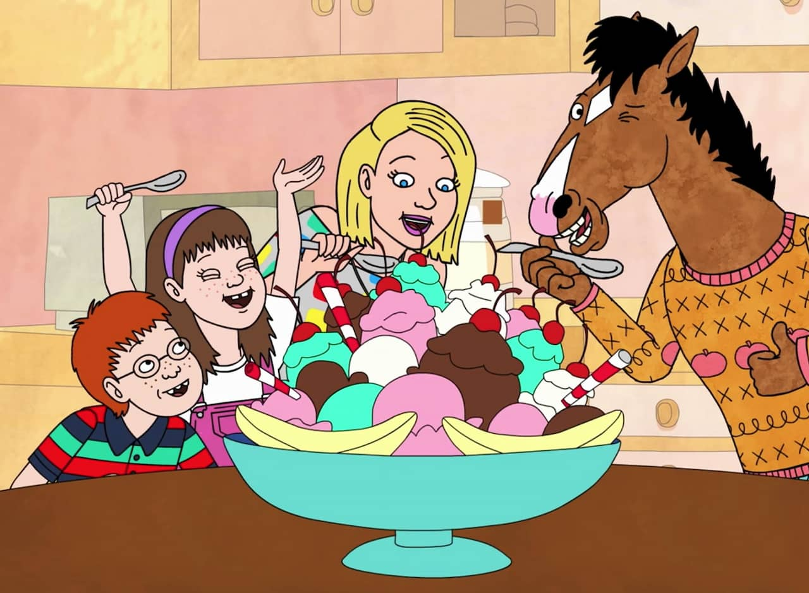

The setting
The show, which is set in Omro, Wisconsin, portrays a young bachelor
horse simply called "The Horse." The Horse is forced to reevaluate
his priorities when he agrees to raise three human children.
The Characters!
- The Horse
The Horse is played by Bojack Horseman
- Olivia
- Sabrina
